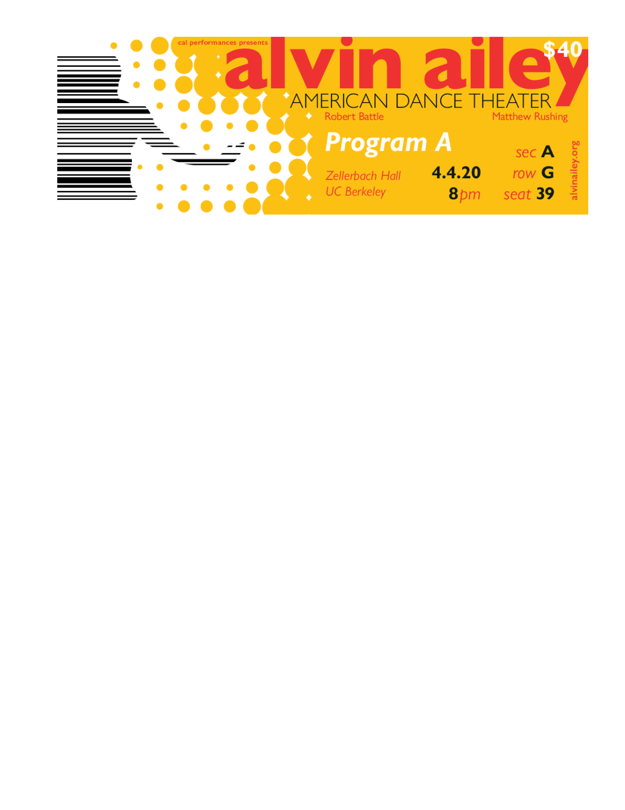

Alvin Ailey
Typography Poster Project
How do you capture the essence of the dynamic Alvin Ailey performers and convey that in a poster? That was the challenge here. In this poster, which was designed to be both eye-grabbing and informative, I created an original drawing that is framed by text moving in different directions. Also note the custom barcode on the ticket, as well as the carryover of design elements from poster to ticket.
This poster and ticket are mock designs and were never used by Alvin Ailey American Dance Theater.

